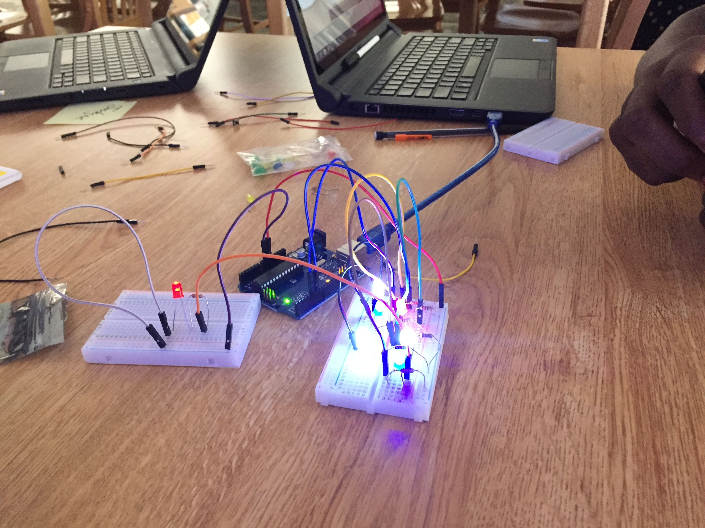
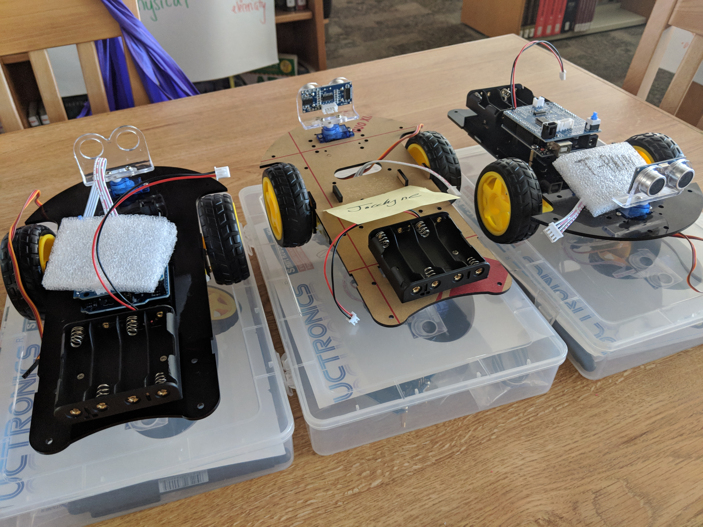
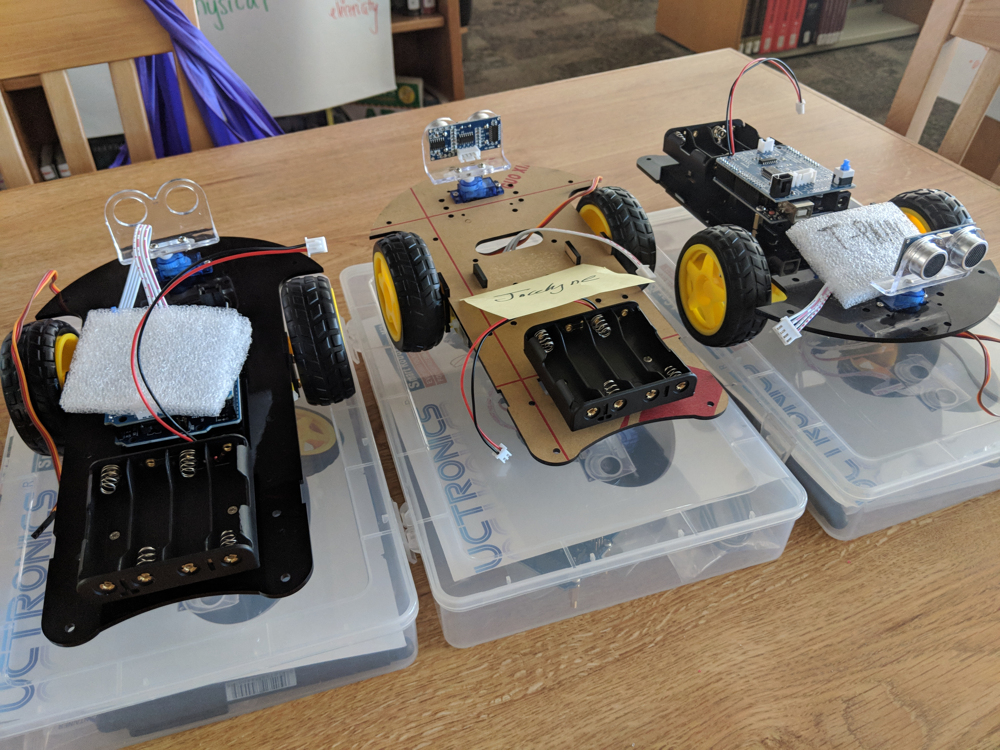
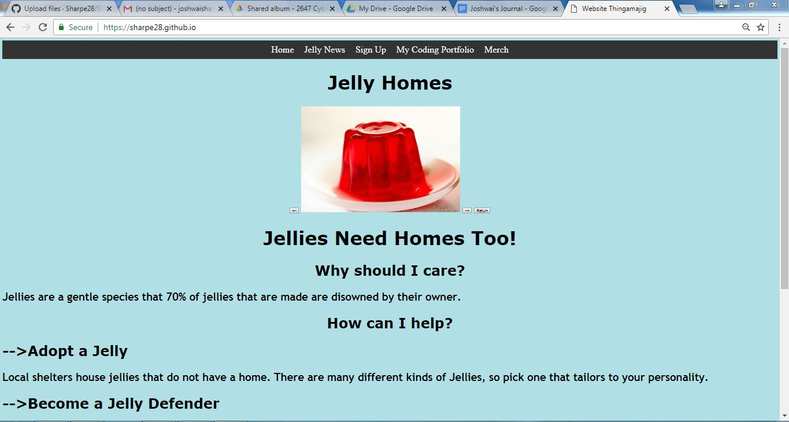

Circuits
Built electrical circuits on an arduino solderless breadboard. In class we got to use a solderless breadboard to assist in the understanding of how electricity works. We would create closed circuits that were meant to light up a light bulb to demonstrate that the cicuit is indeed closed and functional. We also played with Arduino code that would use a loop function to make the LED blink, we could adjust the delay between each blink accordingly by changing the number of milliseconds the code would wait proceeding further in the code in the delay function(s).
Robotics
Built a robot car. Step one of making a autonomous car is to make the car. Building the car was mildly infuriating but fun at the same time. The parts were really tiny and the kit didn't really give us the proper tools that would have made building much more efficient. For example there really tiny nuts but there was no wrench to hold them steady while we screwed in the tiny bolts. On the upside, the kit gave us a fancy multi-tool looking thing that looked like a pen. After, the painful building of our robot my group moved forward and began to code it, well 'code' it. We got code from the site from the robot and messed with it. But my group's robot failed at life so my group was divided into the two other groups. After a while of testing with semi-successful robots the robots decided to give up and started to act drunk. That is the end of the robotics section.
 

Website
Created a multi-paged website. The website began with an empty HTML page but soon was molded into a fine young website like it's father. The website is programmed in HTML, CSS, and JavaScript. Most of the text is in HTML, Most of the Styles and the navagation bar were done in CSS, and Any buttons or alerts were done in JavaScript. My website is based on Wildlife conservation websites like wildnet.org but instead of it being a website based on a living organism I created a scenario were Jell-O became sentient and have feelings then made the conservation based on proctecting them. Also, there is THIS page your on right now explaining the lessons that are 'learnt' (-Quote By Sharp) at the coding camp.
Python
Learned Python and created an algorithim for ceasars cipher


Social Network
Created a Social Network out of python code
In class we made a personal google assistant application. It would listen to what i told it and would give me a predetermined response that i gave it in dialogflow.com. I gave my application conversation paths like if the A.I. program was real ornot and if the user is real or not.